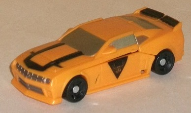
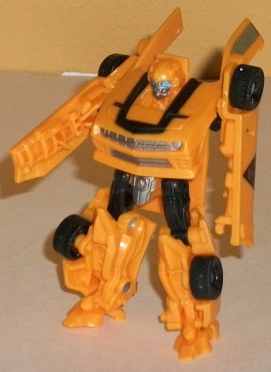
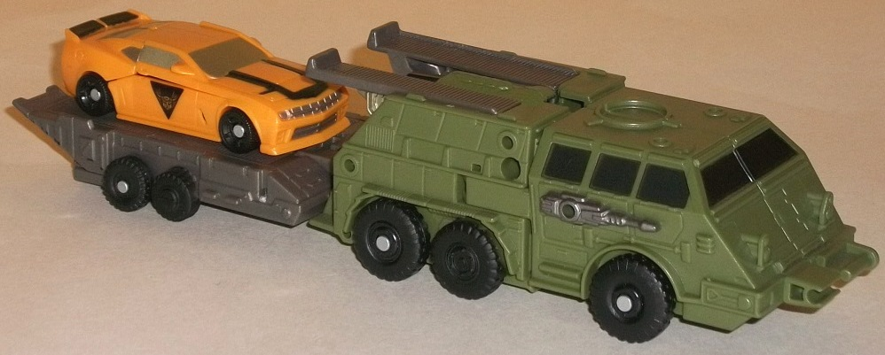
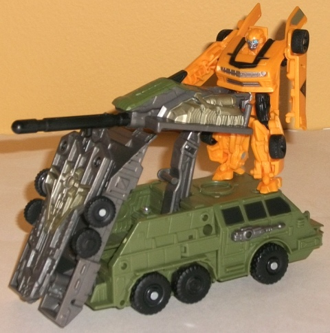
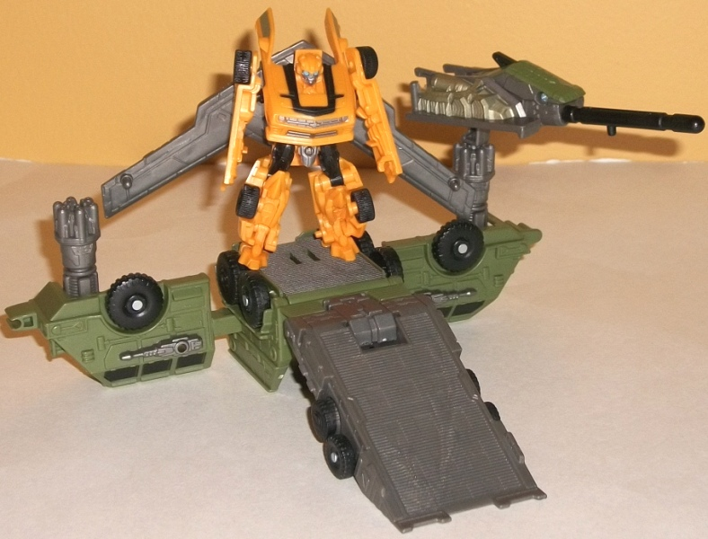

Allegiance
: Autobot
Size
: Cyberverse Vehicle Set
Difficulty of Transformation of Robot
:
Very Easy
Difficulty of Transformation of Base
:
Easy
Color Scheme
: Dull dark military
green, swirly silvery gray, orangish yellow, and some black, silver, light
sky blue, metallic gunmetal gray, pale metallic goldish silver, and charcoal
black
Figure Rating
: 8.1
Base Rating
: 8.7
(NOTE: Because this set is partiallya repaint, this is not a full-blown review. This mainly covers any changes made to the mold and the color scheme, and merely compares it to the original DotM Legion class Bumblebee. For a review on the mold itself, read the review of the original Dotm Legion class Bumblebee here .)


The core Bumblebee figure
is a redeco, and barely one at that, of the solo-released "normal" Legion
class Bumblebee from the line. As such, it's a pretty good mold. The main
change made for this version is that his yellow is more of a movie-accurate
"cheese" yellow here compared to the lighter yellow of the original. Regarding
the changes that have been made to make him LESS accurate, mainly his paint
job-- instead of two stripes down the whole of his vehicle mode, there's
only a U-shaped stripe on the front, and there's rather cool N.E.S.T./Autobot
symbols on his car doors. His windows and front grill are painted silver,
but otherwise his paint apps on his spoiler and robot mode are the exact
same here as on the original release of the mold.



Bumblebee's Cyberverse-scaled
playset that he comes with certainly fits the moniker "Mobile Battle Bunker",
that's for sure. In its vehicle mode, it's a standard military transport,
and can carry Bumblebee and one other Cyberverse Legion or Commander figure
around. There's also a pretty neat little accessory that can be taken out
from the bottom of this mode and attached to the Legion DotM Bumblebee
toy in robot mode, giving him a winged shield backpack with adjustable
wings (it will only fit Bumblebee as far as I know, though). The color
scheme of dull green, black, and silvery gray isn't exactly exciting, but
it's certainly fitting for the alt mode, and although there aren't many
paint apps, the colors are spread out enough where the set doesn't look
too one-tone on any part of it. The mold detailing is very well-done where
it needs to be, from the tiny ridges near the back end to the guns on the
sides of the front and the headlights and other details on the front side.
There's also TONS of ports for Cyberverse-scaled weapons to be plugged
into the base-- at least twelve, though I wouldn't be surprised if I've
never noticed one or two.
Bumblebee's playset
is actually a bit of a triple-changer, and its first "alt mode" is just
really the back end being lifted up to form a sort of ramp while the middle
section comes out and forms a spring-loaded missile launcher (the missile
is stored on the underside of the vehicle), with the arm it's on movable
at four different points. Bumblebee or another Cyberverse figure is supposed
to stand on the front of the vehicle-- the back of this mode. It's pretty
basic, but serves as a nice "halfway" base that doesn't require much of
a transformation at all.
The playset's other
mode has a slightly more involved (though hardly difficult) transformation,
and looks much more like a bunker than its other non-vehicle mode. There's
still the ramp, though now it's a bit less radically inclined, and the
top is ridged to look more like a stopping area for vehicles. By pressing
down on a small black tab on the back, you can lift up the top of this
area to let the vehicle slide down the ramps to the ground-- a pretty nifty
feature. The two "wings" of the base each have a post that can hold the
missile launcher arm (which is detachable) or other weapons with simliarly-sized
ports, though even by themselves they look like anti-aircraft missile shooters.
Overall, the Bumblebee Mobile Battle Bunker is a definite recommended purchase for Cyberverse fans (particularly if you don't have the DotM Legion Bumblebee mold yet)-- the "core" figure is good, and the base has three individual modes, two of which are very distinct from each other and quite well-done, not to mention very versatile regarding how you want to deck them out with weapons. The extra pair of wings for Bumblebee and the ramp-raising gimmick are cool touches, as well. Definitely my favorite of the DotM Cyberverse vehicle sets.
Review by Beastbot